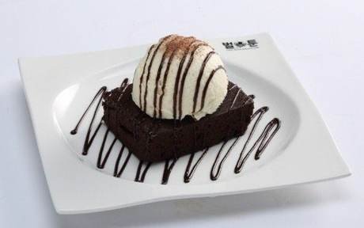
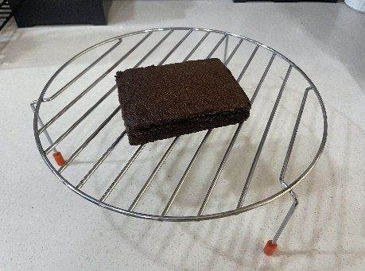
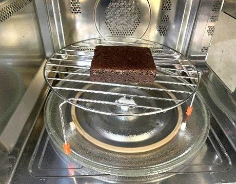
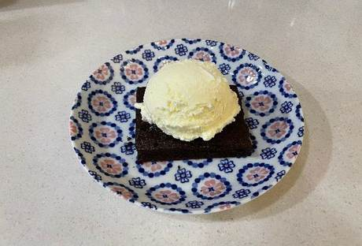
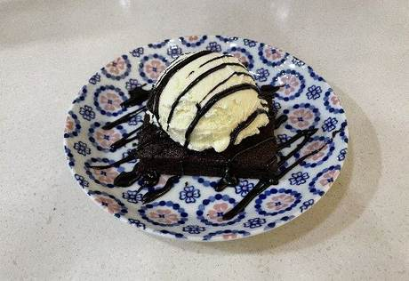

| 메뉴명 | 초코바닐라 브라우니 |
|---|---|
| 판매가격 | 6,500원 |
| 원재료 | 브라우니, 바닐라 아이스크림, 초코소스 |
| 사용 부자재 | 덮밥접시, 포크 |
| 메뉴특징 | 달콤한 초콜릿 브라우니에 바닐라 아이스크림을 얹은 디저트 |




※ 제조 후 최대한 빨리 제공할 것.
- 휘핑크림 : 접시 한쪽에 휘핑크림 3바퀴(20g)짜서 제공하기
- 초코쉘 : 아이스크림 위에 초코쉘 20g 먼저 드리즐 후 초코소스 뿌려서 제공하기
(*초코쉘 사용 전, 충분히 흔들어 코코넛오일을 섞어준 뒤 뿌릴 것.)
토핑 추가 시